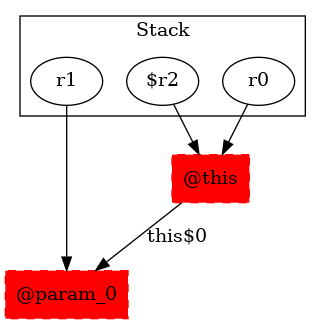

-1 : r0 := @this: Test3$MyException
-1 : r1 := @parameter0: testcase.Test3
-1 : $r2 = (testcase.Test3$MyException) r0
5 : $r2.|testcase.Test3$MyException: testcase.Test3 this$0| = r1
5 : specialinvoke r0.|java.lang.Exception: void |init|()|() -> class soot.jimple.internal.JInvokeStmt
5 : return
